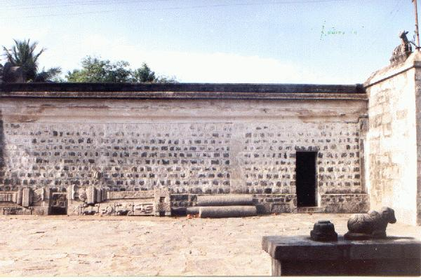

puṟavār paṉaṅkāṭṭūr
- Identifier: NA20
- Modern Name (NIC):
- Modern Name (M.I.): paṉaiyapuram
- Modern Name (Govt Press): paṉaiyapuram
- Modern Name: paṉaiya puram
- Modern District & Taluk: viḻuppuram DT (viḻuppuram TK)
- Old administrative location: South Arcot DT (Villupuram TK)
- Nearby town:
- Railway station: Muṇṭiyam Pākkam (E: 3km)
- Longit. 79 deg. 32'; Latit. 12 deg. 01' [NA20]
- C.D.Maclean-3: entry: VILLOOPOORAM, p. 983, col. 2,
[Panayapooram [paṉaiyappuram],
sculptured Shiva temple with a tasdik allowance,
lat. 12deg. 00', long. 79deg. 35']
- Location: according to PK: Naṭu Nāṭu (NA20)
- Name inside hymns:
- Name inside PK: puṟavu ār paṉaṅkāṭṭūr
- Rank inside third volume of PIFI: 211
- Rank inside Civastala Mañcari: 209
- Rank on PY576 map: 57
- Total number of patikam-s: 1
- Campantar: 1 patikam
8 pictures taken on 1998 August 4th (Tuesday, 8 a.m.)



- Patikam 2_53